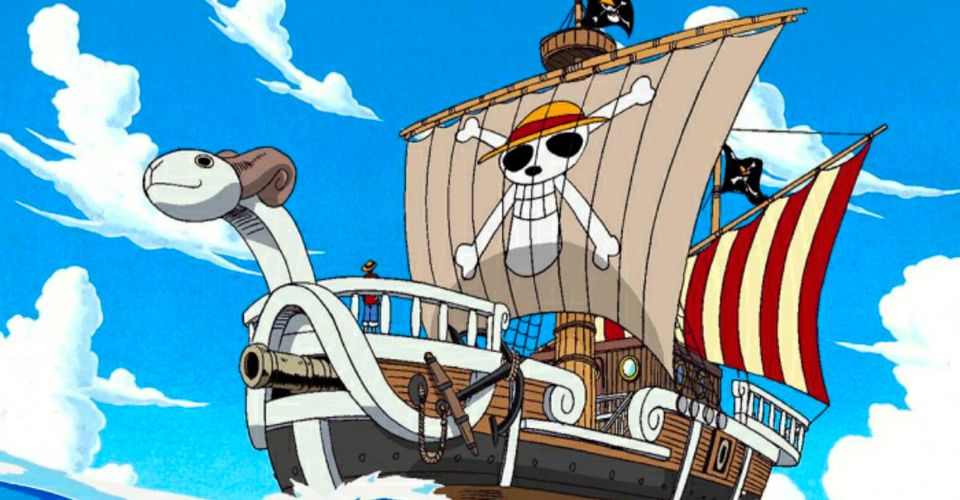
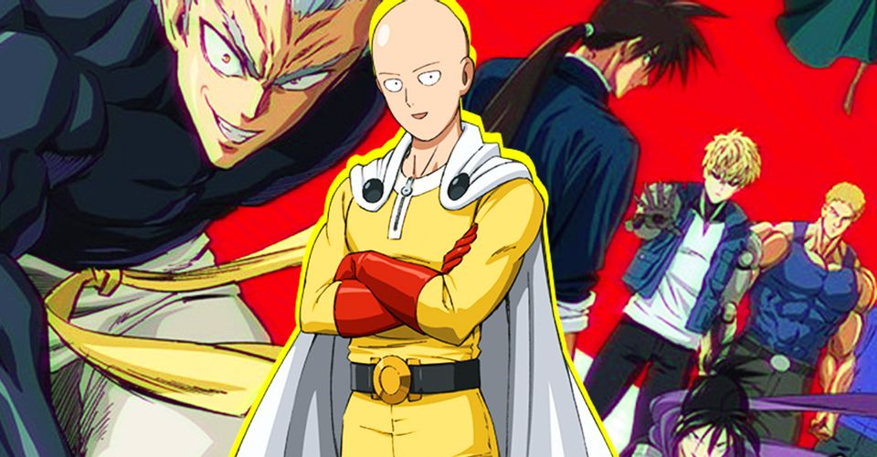
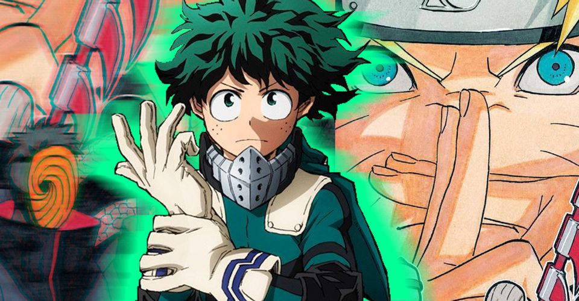
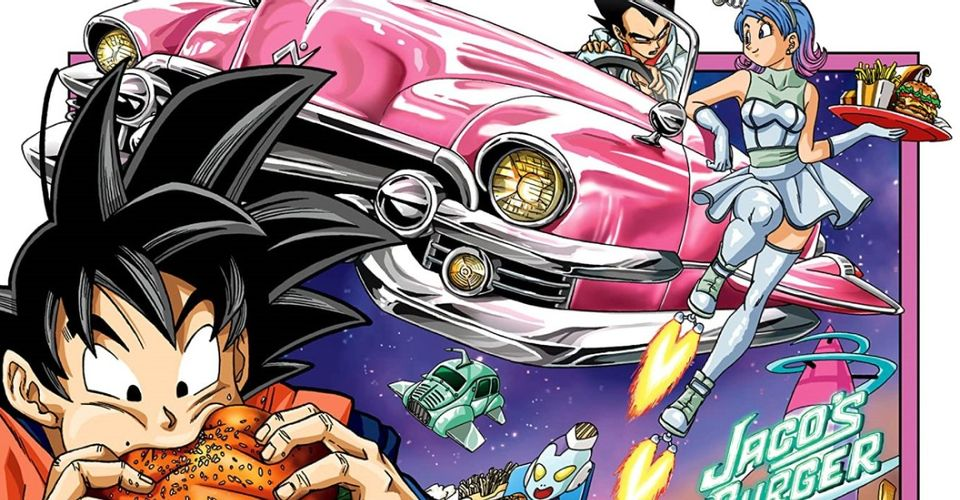
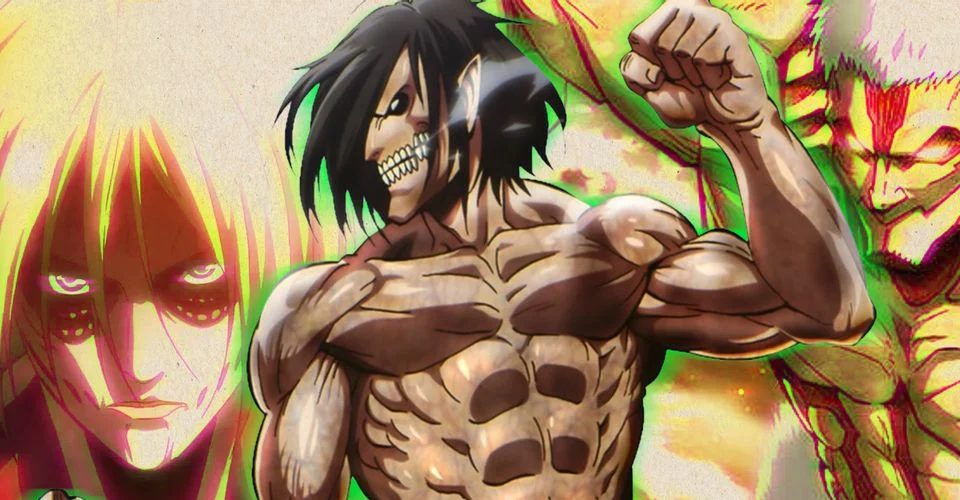
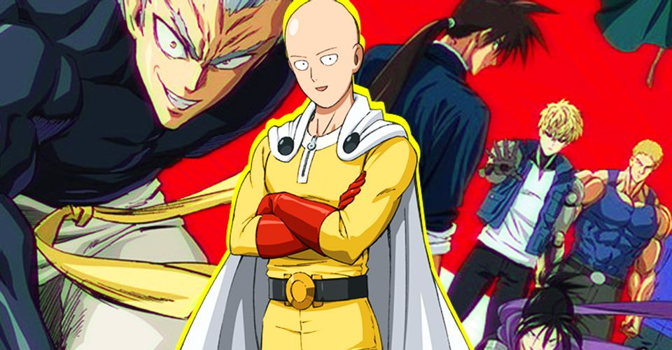
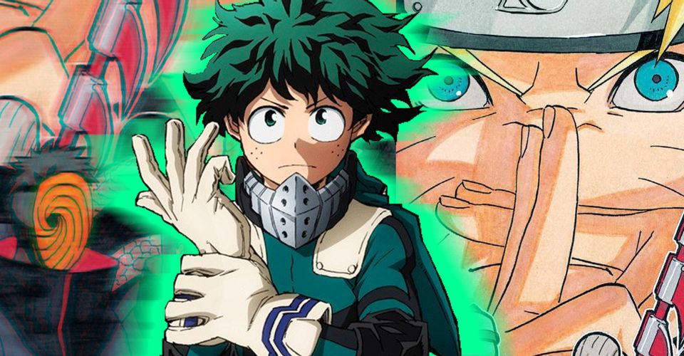
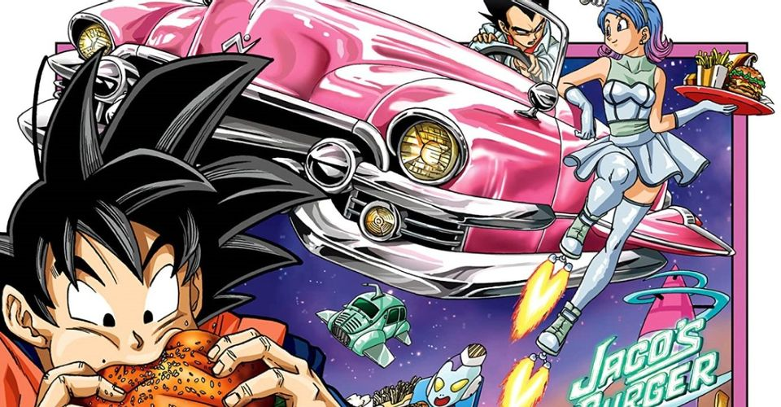
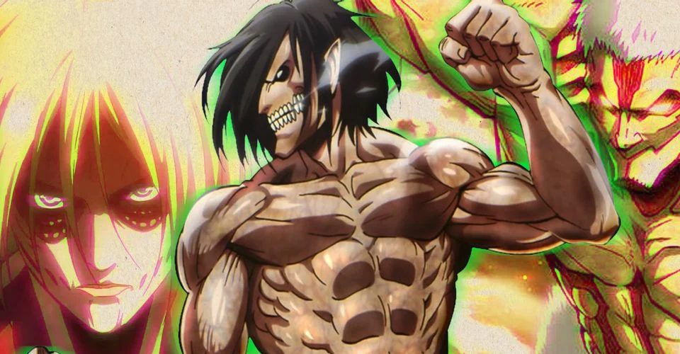

NEWS





One Piece: 5 Strange Secrets About the Going Merry
The Straw Hats' first ship is one of the One Piece franchise's most iconic set-pieces, but the Going Merry is a lot more than that. More...

Why One-Punch Man's Animation Changed So Much Between Season 1 & 2
One-Punch Man's first season stood out for its spectacular animation quality, but it definitely took a hit in Season 2. More...

My Hero Academia's Izuku Could Make a Better Naruto Than Naruto
If he switched series, My Hero Academia's Izuku Midoriya could easily take Naruto's place and become Hokage himself. More...

Dragon Ball Super Vol. 11 Has Goku & Vegeta Prepare for a Big Rematch
In the wake of Goku and Vegeta's first disastrous fight against Moro, Dragon Ball Super Vol. 11 has them up their game. More...

Attack on Titan: Where Each of the Anime’s Nine Titans Are (& Who Wields Them)
As the Attack on Titan anime has finally revealed all Nine Shifter Titans, let's go over who possesses each of them, and where they are right now. More...